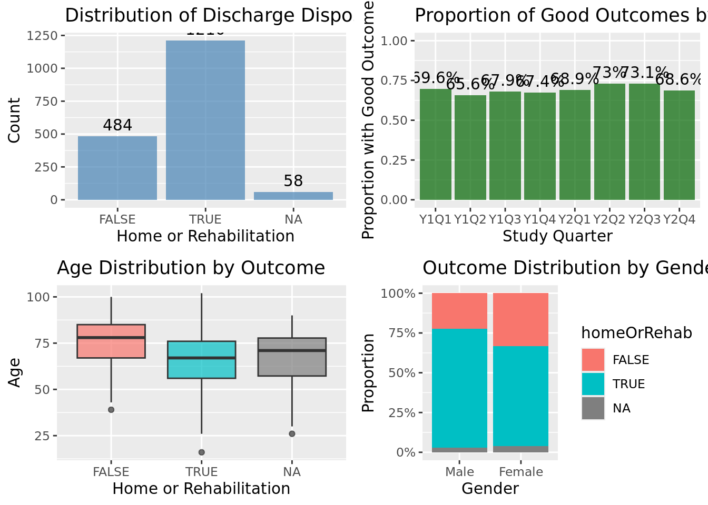
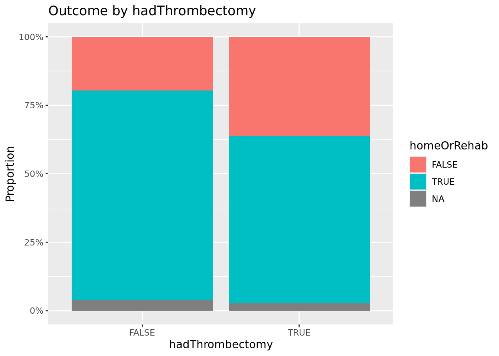
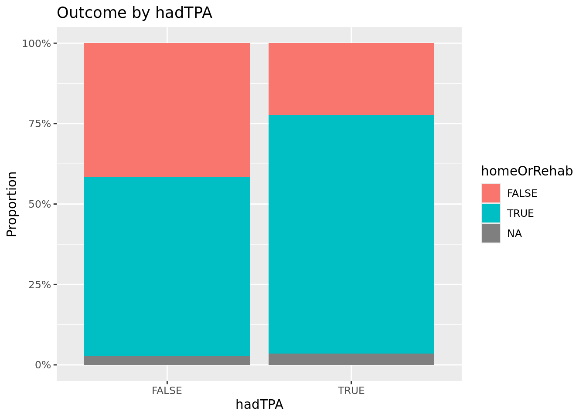

library(tidyverse)── Attaching core tidyverse packages ──────────────────────── tidyverse 2.0.0 ──
✔ dplyr 1.1.4 ✔ readr 2.1.5
✔ forcats 1.0.0 ✔ stringr 1.5.1
✔ ggplot2 3.5.1 ✔ tibble 3.2.1
✔ lubridate 1.9.3 ✔ tidyr 1.3.1
✔ purrr 1.0.2
── Conflicts ────────────────────────────────────────── tidyverse_conflicts() ──
✖ dplyr::filter() masks stats::filter()
✖ dplyr::lag() masks stats::lag()
ℹ Use the conflicted package (<http://conflicted.r-lib.org/>) to force all conflicts to become errorslibrary(ggplot2)
library(naniar)
library(corrplot)corrplot 0.94 loadedlibrary(gridExtra)
Attaching package: 'gridExtra'
The following object is masked from 'package:dplyr':
combinelibrary(purrr)
library(broom)
load("strokeStudy.RData")
cat("DATASET OVERVIEW\n")DATASET OVERVIEWcat("Dataset name: x\n")Dataset name: xcat("Dimensions:", dim(x), "\n")Dimensions: 1752 12 cat("Variables:", names(x), "\n\n")Variables: siteID Time2 Age Gender Race2 EMSvsCar PreHospNotify hadThrombectomy hadTPA tpaComplic thrComplic homeOrRehab cat("BASIC DATA OVERVIEW\n")BASIC DATA OVERVIEWstr(x)'data.frame': 1752 obs. of 12 variables:
$ siteID : Factor w/ 61 levels "100","101","102",..: 10 1 1 1 1 1 10 10 10 1 ...
$ Time2 : Factor w/ 8 levels "Y1Q1","Y1Q2",..: 1 1 1 1 1 1 1 1 1 1 ...
$ Age : int 79 70 91 45 43 47 57 52 80 34 ...
$ Gender : Factor w/ 2 levels "Male","Female": 2 1 1 2 2 2 1 1 1 1 ...
$ Race2 : Factor w/ 4 levels "Caucasian","African American",..: 1 2 1 2 3 1 1 1 3 2 ...
$ EMSvsCar : num 1 1 1 0 0 1 0 0 1 1 ...
$ PreHospNotify : Factor w/ 2 levels "Yes","No": 1 1 1 2 2 1 2 2 1 1 ...
$ hadThrombectomy: logi TRUE FALSE FALSE FALSE TRUE TRUE ...
$ hadTPA : logi FALSE TRUE TRUE TRUE FALSE FALSE ...
$ tpaComplic : logi FALSE FALSE FALSE FALSE FALSE FALSE ...
$ thrComplic : logi FALSE FALSE FALSE FALSE FALSE FALSE ...
$ homeOrRehab : logi TRUE TRUE TRUE TRUE FALSE TRUE ...summary(x) siteID Time2 Age Gender
170 :305 Y1Q2 :285 Min. : 16.00 Male :899
160 :263 Y1Q4 :239 1st Qu.: 58.00 Female:853
130 :218 Y2Q1 :238 Median : 70.00
150 :208 Y2Q3 :219 Mean : 68.31
100 :185 Y1Q3 :215 3rd Qu.: 80.00
180 :177 Y2Q2 :204 Max. :102.00
(Other):396 (Other):352 NA's :802
Race2 EMSvsCar PreHospNotify hadThrombectomy
Caucasian :1112 Min. :0.00 Yes :1175 Mode :logical
African American: 457 1st Qu.:1.00 No : 374 FALSE:898
Other : 100 Median :1.00 NA's: 203 TRUE :854
Missing : 83 Mean :0.88
3rd Qu.:1.00
Max. :1.00
NA's :94
hadTPA tpaComplic thrComplic homeOrRehab
Mode :logical Mode :logical Mode :logical Mode :logical
FALSE:482 FALSE:1709 FALSE:1711 FALSE:484
TRUE :1270 TRUE :43 TRUE :41 TRUE :1210
NA's :58
cat("MISSING DATA ANALYSIS\n")MISSING DATA ANALYSISmiss_summary <- miss_var_summary(x)
print(miss_summary)# A tibble: 12 × 3
variable n_miss pct_miss
<chr> <int> <num>
1 Age 802 45.8
2 PreHospNotify 203 11.6
3 EMSvsCar 94 5.37
4 homeOrRehab 58 3.31
5 siteID 0 0
6 Time2 0 0
7 Gender 0 0
8 Race2 0 0
9 hadThrombectomy 0 0
10 hadTPA 0 0
11 tpaComplic 0 0
12 thrComplic 0 0 p1 <- gg_miss_var(x) +
labs(title = "Missing Data by Variable")
missing_by_time <- x |>
group_by(Time2) |>
summarise(across(everything(), ~sum(is.na(.))/n() * 100)) |>
pivot_longer(cols = -Time2, names_to = "variable", values_to = "missing_pct")
p2 <- ggplot(missing_by_time, aes(x = Time2, y = missing_pct, color = variable)) +
geom_line(aes(group = variable)) +
geom_point() +
labs(title = "Missing Data Patterns Over Time",
y = "Missing (%)", x = "Study Quarter") +
theme(legend.position = "none")
cat("OUTCOME VARIABLE: homeOrRehab\n")OUTCOME VARIABLE: homeOrRehaboutcome_table <- table(x$homeOrRehab, useNA = "always")
outcome_prop <- prop.table(table(x$homeOrRehab))
print(outcome_table)
FALSE TRUE <NA>
484 1210 58 print(outcome_prop)
FALSE TRUE
0.2857143 0.7142857 p3 <- ggplot(x, aes(x = homeOrRehab)) +
geom_bar(fill = "steelblue", alpha = 0.7) +
labs(title = "Distribution of Discharge Disposition",
x = "Home or Rehabilitation", y = "Count") +
geom_text(stat = 'count', aes(label = ..count..), vjust = -0.5)
outcome_time <- x |>
group_by(Time2, homeOrRehab) |>
summarise(count = n()) |>
group_by(Time2) |>
mutate(prop = count/sum(count)) |>
filter(homeOrRehab == TRUE)`summarise()` has grouped output by 'Time2'. You can override using the
`.groups` argument.p4 <- ggplot(outcome_time, aes(x = Time2, y = prop)) +
geom_col(fill = "darkgreen", alpha = 0.7) +
geom_text(aes(label = paste0(round(prop*100, 1), "%")), vjust = -0.5) +
labs(title = "Proportion of Good Outcomes by Study Quarter",
y = "Proportion with Good Outcome", x = "Study Quarter") +
ylim(0, 1)
cat("DEMOGRAPHIC VARIABLES\n")DEMOGRAPHIC VARIABLESp5 <- ggplot(x, aes(x = homeOrRehab, y = Age, fill = homeOrRehab)) +
geom_boxplot(alpha = 0.7) +
labs(title = "Age Distribution by Outcome",
x = "Home or Rehabilitation", y = "Age") +
theme(legend.position = "none")
gender_outcome <- x |>
count(Gender, homeOrRehab) |>
group_by(Gender) |>
mutate(prop = n/sum(n))
p6 <- ggplot(gender_outcome, aes(x = Gender, y = prop, fill = homeOrRehab)) +
geom_bar(stat = "identity", position = "fill") +
labs(title = "Outcome Distribution by Gender",
y = "Proportion") +
scale_y_continuous(labels = scales::percent)
race_outcome <- x |>
count(Race2, homeOrRehab) |>
group_by(Race2) |>
mutate(prop = n/sum(n))
p7 <- ggplot(race_outcome, aes(x = Race2, y = prop, fill = homeOrRehab)) +
geom_bar(stat = "identity", position = "fill") +
labs(title = "Outcome Distribution by Race",
y = "Proportion") +
scale_y_continuous(labels = scales::percent) +
theme(axis.text.x = element_text(angle = 45, hjust = 1))
cat("CLINICAL AND PROCESS VARIABLES\n")CLINICAL AND PROCESS VARIABLESems_outcome <- x |>
count(EMSvsCar, homeOrRehab) |>
group_by(EMSvsCar) |>
mutate(prop = n/sum(n))
p8 <- ggplot(ems_outcome, aes(x = factor(EMSvsCar), y = prop, fill = homeOrRehab)) +
geom_bar(stat = "identity", position = "fill") +
labs(title = "Outcome by Arrival Mode",
x = "Arrival by EMS (1=Yes, 0=No)", y = "Proportion") +
scale_y_continuous(labels = scales::percent)
treatment_plots <- list()
treatment_vars <- c("hadThrombectomy", "hadTPA", "PreHospNotify")
for(i in seq_along(treatment_vars)) {
var <- treatment_vars[i]
treatment_data <- x |>
count(!!sym(var), homeOrRehab) |>
group_by(!!sym(var)) |>
mutate(prop = n/sum(n))
treatment_plots[[i]] <- ggplot(treatment_data,
aes(x = factor(!!sym(var)), y = prop, fill = homeOrRehab)) +
geom_bar(stat = "identity", position = "fill") +
labs(title = paste("Outcome by", var),
x = var, y = "Proportion") +
scale_y_continuous(labels = scales::percent)
}
cat("COMPLICATION ANALYSIS\n")COMPLICATION ANALYSISif("tpaComplic" %in% names(x)) {
print(table(x$tpaComplic, useNA = "always"))
}
FALSE TRUE <NA>
1709 43 0 if("thrComplic" %in% names(x)) {
print(table(x$thrComplic, useNA = "always"))
}
FALSE TRUE <NA>
1711 41 0 cat("SITE-SPECIFIC ANALYSIS\n")SITE-SPECIFIC ANALYSISsite_outcome <- x |>
group_by(siteID, homeOrRehab) |>
summarise(count = n()) |>
group_by(siteID) |>
mutate(prop_good = count/sum(count)) |>
filter(homeOrRehab == TRUE)`summarise()` has grouped output by 'siteID'. You can override using the
`.groups` argument.p9 <- ggplot(site_outcome, aes(x = factor(siteID), y = prop_good)) +
geom_col(fill = "purple", alpha = 0.7) +
geom_text(aes(label = paste0(round(prop_good*100, 1), "%")), vjust = -0.5) +
labs(title = "Proportion of Good Outcomes by Site",
y = "Proportion with Good Outcome", x = "Site ID") +
ylim(0, 1)
cat("GENERATING SUMMARY PLOTS...\n")GENERATING SUMMARY PLOTS...grid.arrange(p3, p4, p5, p6, ncol = 2)Warning: The dot-dot notation (`..count..`) was deprecated in ggplot2 3.4.0.
ℹ Please use `after_stat(count)` instead.Warning: Removed 802 rows containing non-finite outside the scale range
(`stat_boxplot()`).
grid.arrange(p7, p8, p9, ncol = 2)
for(plot in treatment_plots) {
print(plot)
}


cat("SUMMARY STATISTICS TABLE\n")SUMMARY STATISTICS TABLEdemographic_summary <- x |>
group_by(homeOrRehab) |>
summarise(
n = n(),
mean_age = mean(Age, na.rm = TRUE),
sd_age = sd(Age, na.rm = TRUE),
.groups = 'drop'
)
print(demographic_summary)# A tibble: 3 × 4
homeOrRehab n mean_age sd_age
<lgl> <int> <dbl> <dbl>
1 FALSE 484 76.3 12.6
2 TRUE 1210 65.3 14.6
3 NA 58 67.0 15.7cat("TIME TREND ANALYSIS FOR PROGRAM EFFECTIVENESS\n")TIME TREND ANALYSIS FOR PROGRAM EFFECTIVENESSx <- x |>
mutate(period = case_when(
Time2 %in% 1:2 ~ "Baseline",
Time2 %in% 3:6 ~ "Implementation",
Time2 %in% 7:8 ~ "End-of-Study",
TRUE ~ "Other"
))
period_outcome <- x |>
group_by(period, homeOrRehab) |>
summarise(count = n()) |>
group_by(period) |>
mutate(prop = count/sum(count),
total = sum(count)) |>
filter(homeOrRehab == TRUE)`summarise()` has grouped output by 'period'. You can override using the
`.groups` argument.print(period_outcome)# A tibble: 1 × 5
# Groups: period [1]
period homeOrRehab count prop total
<chr> <lgl> <int> <dbl> <int>
1 Other TRUE 1210 0.691 1752p10 <- ggplot(period_outcome, aes(x = period, y = prop)) +
geom_col(fill = "orange", alpha = 0.7) +
geom_text(aes(label = paste0(round(prop*100, 1), "%\n(n=", total, ")")), vjust = -0.5) +
labs(title = "Good Outcomes by Study Period",
y = "Proportion with Good Outcome", x = "Study Period") +
ylim(0, 1)
print(p10)
cat("CORRELATION ANALYSIS\n")CORRELATION ANALYSISnumeric_data <- x |>
select(where(is.numeric)) |>
select(-any_of(c("siteID")))
if(ncol(numeric_data) > 1) {
cor_matrix <- cor(numeric_data, use = "pairwise.complete.obs")
corrplot(cor_matrix, method = "circle", type = "upper")
}